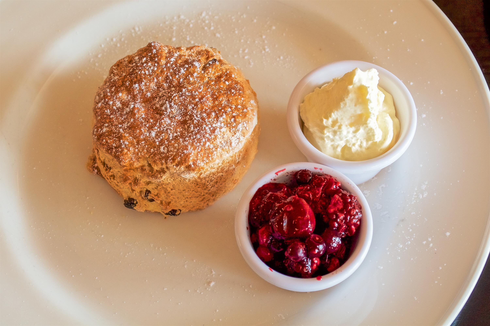
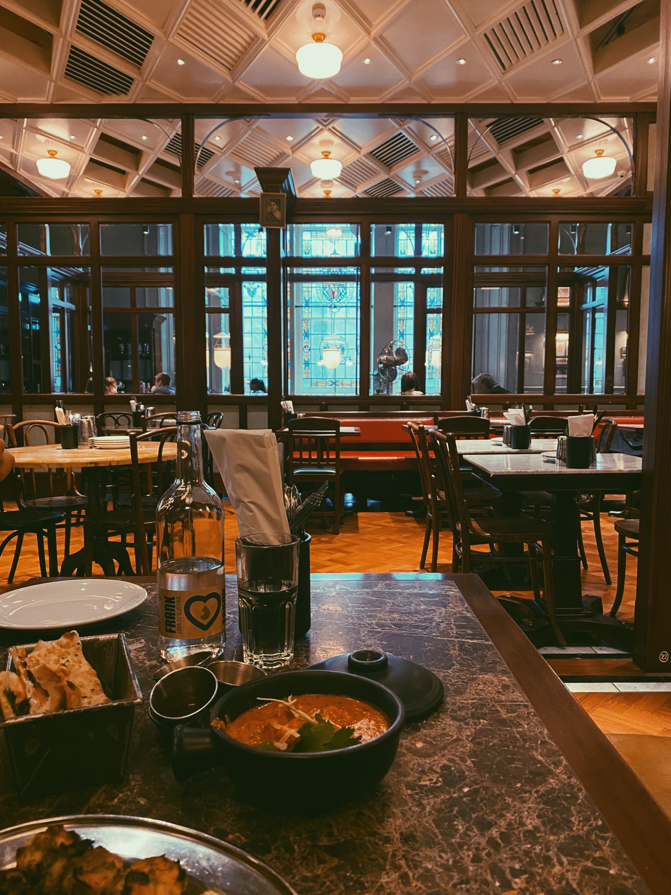
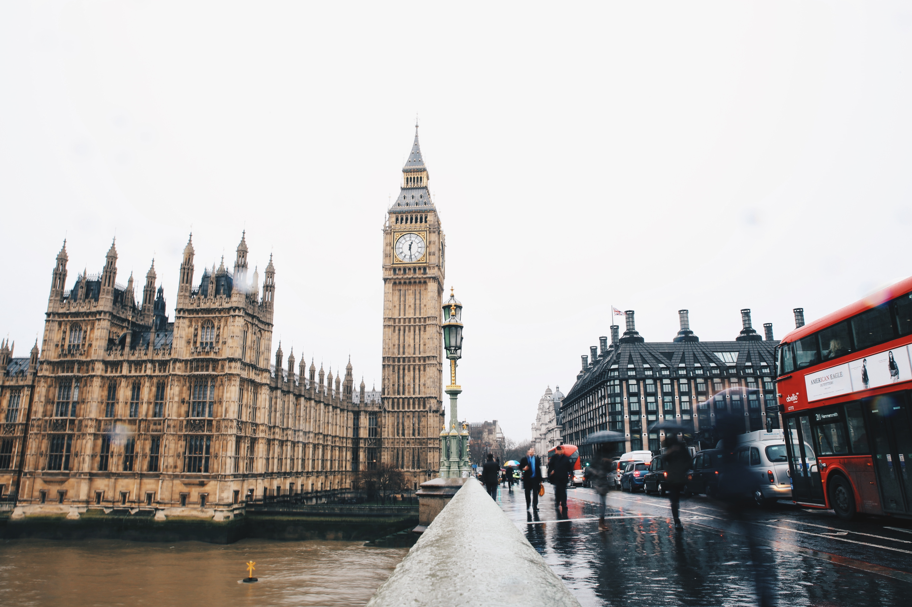
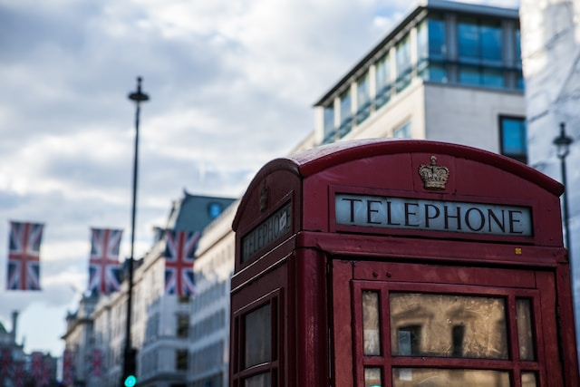
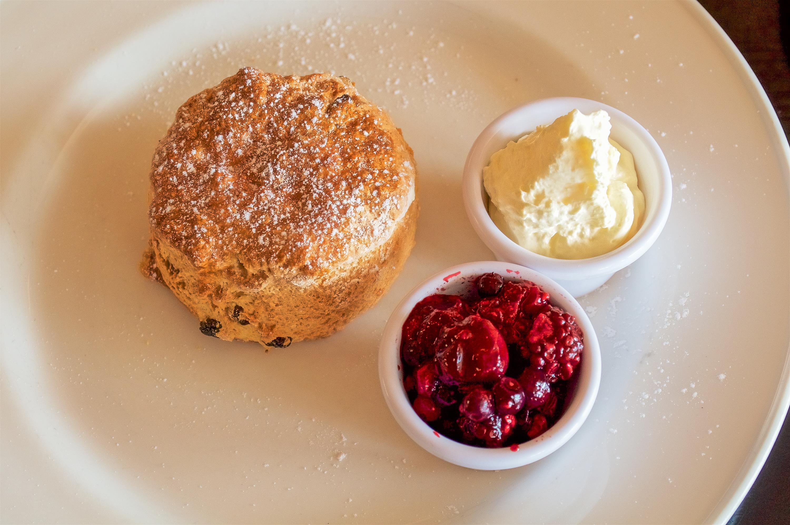
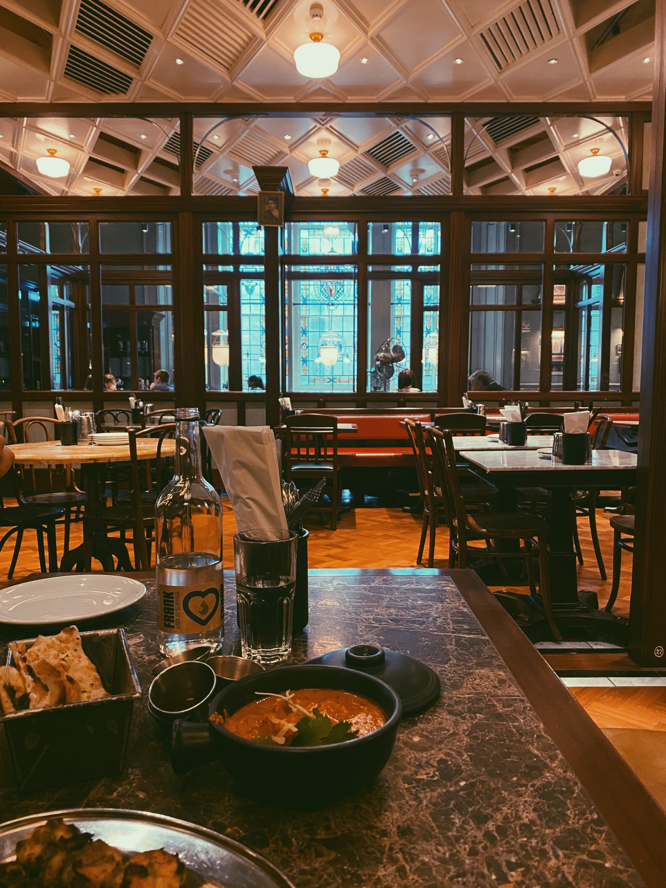
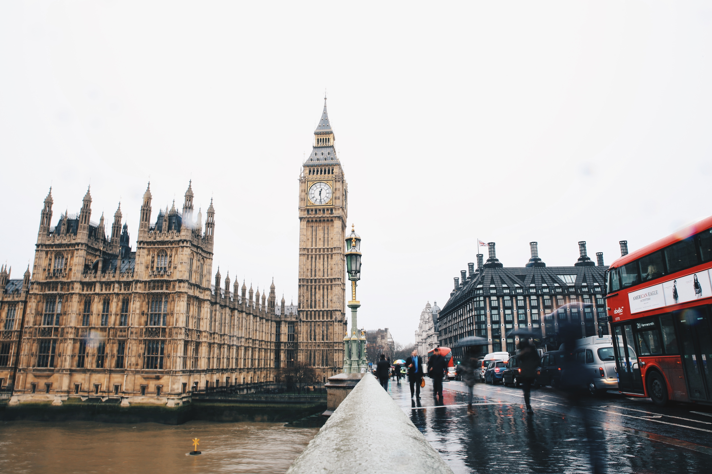
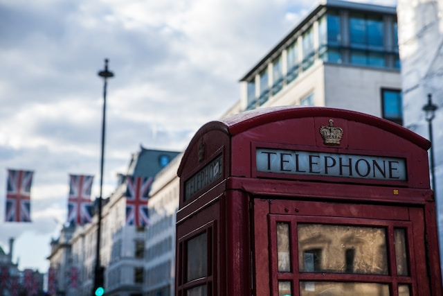

ABOUT
Traditional TEA Time
Russell Tea Roomでは、アフタヌーンティーを提供しております。
紅茶とともに軽食や菓子を楽しむ、ちょっと贅沢な、イギリス発祥の喫茶習慣です。
日常をはなれ、時間のゆとりと優雅さを、心ゆくまでお楽しみいただけます。
当ティールームのこだわりをご紹介いたします。
TOPICS
News & Blog
Russell Tea Roomからお客様へのお知らせでございます。
各シーズンメニューの変更やご紹介・営業時間変更など
紅茶やコーヒーなどのお飲みもの提供時期についてのお知らせ。
お客様に、アフタヌーンティーをよりお楽しみいただけるよう、
スタッフやバイヤーがちょっとしたブログを綴っております。
当ティールームの日々の話題をお届けいたします。
SHOP
-
住所
ACCESS
-
〒102-0082 東京都千代田区一番町1-30
1-30, Ichibancho, Chiyoda Ward, Tokyo 102-0082
-
営業時間
-
午前11時〜午後8時
Open:11:00 / Close:20:00
-
連絡先
TEL
- 03-XXXX-XXXX